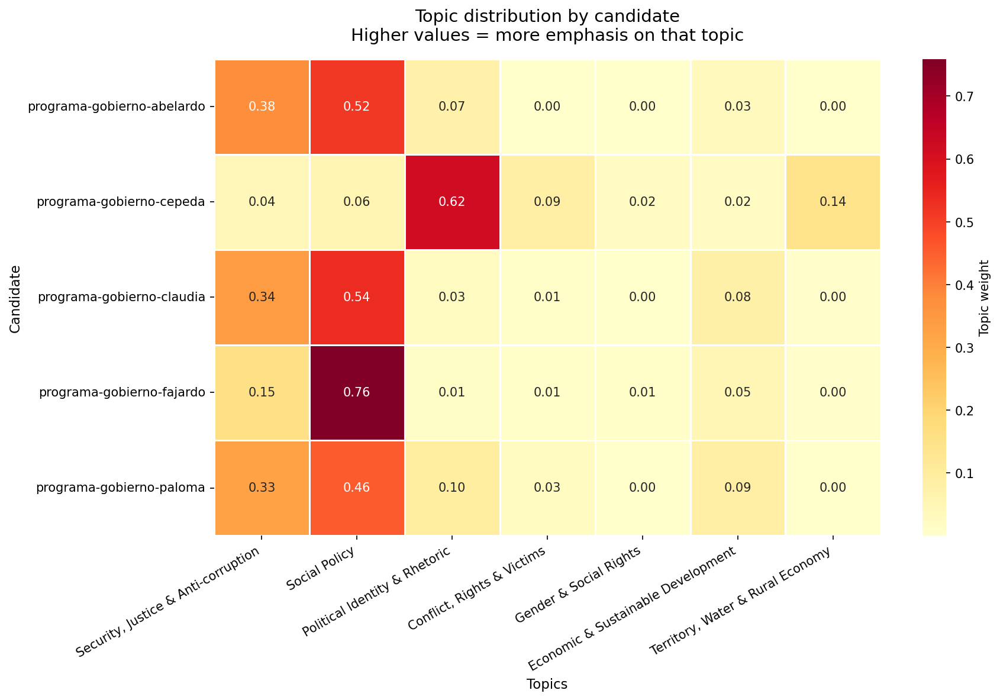
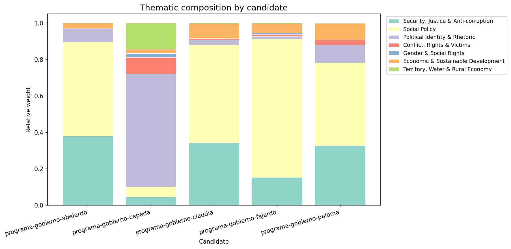
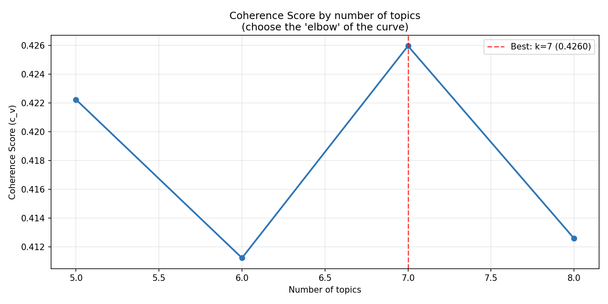
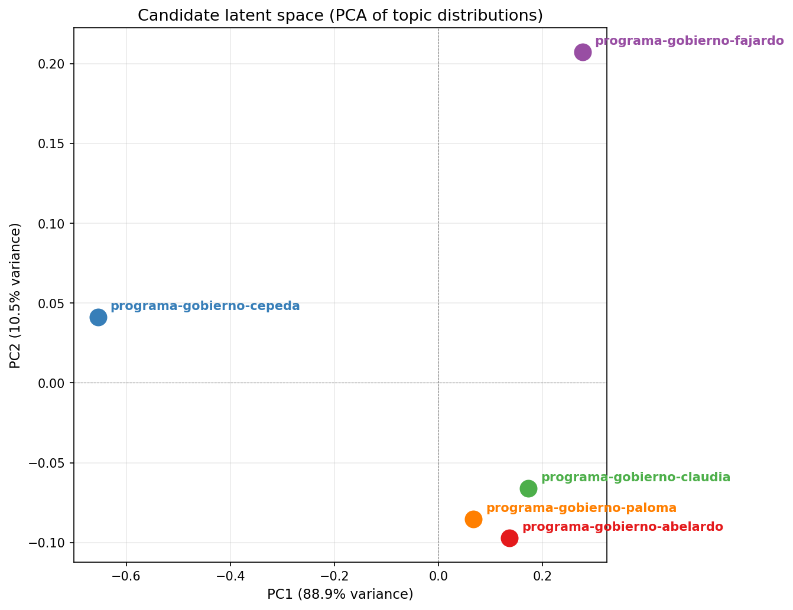
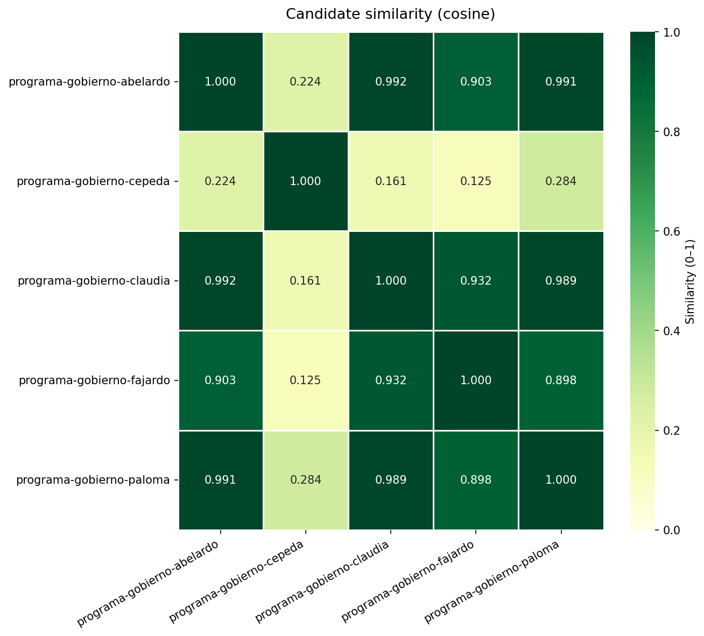
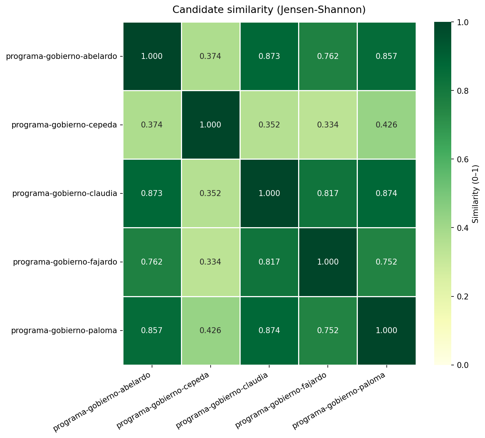

LDA topic analysis applied to the presidential candidates' government plans.
words_per_topic.csv,
read the top words for each topic, and assign descriptive labels in the
TOPIC_LABELS dict in the script. Re-run to get the final report
with meaningful labels.
Each value represents how much weight that topic has in the candidate's plan. Higher value = more emphasis on that theme.
| Security, Justice & Anti-corruption | Social Policy | Political Identity & Rhetoric | Conflict, Rights & Victims | Gender & Social Rights | Economic & Sustainable Development | Territory, Water & Rural Economy | |
|---|---|---|---|---|---|---|---|
| Candidate | |||||||
| programa-gobierno-abelardo | 0.379 | 0.516 | 0.074 | 0.000 | 0.000 | 0.031 | 0.000 |
| programa-gobierno-cepeda | 0.044 | 0.058 | 0.619 | 0.091 | 0.022 | 0.022 | 0.144 |
| programa-gobierno-claudia | 0.342 | 0.537 | 0.028 | 0.009 | 0.000 | 0.080 | 0.004 |
| programa-gobierno-fajardo | 0.154 | 0.759 | 0.014 | 0.011 | 0.007 | 0.050 | 0.005 |
| programa-gobierno-paloma | 0.326 | 0.456 | 0.098 | 0.029 | 0.000 | 0.091 | 0.000 |


Chart for choosing the optimal number of topics. The "elbow" of the curve indicates the best balance between interpretability and detail.

Each candidate projected onto the first two principal components of their 7-dimensional topic distribution vector. Closer points = more similar thematic profiles.

Based on the topic distribution vectors. Values close to 1 = very similar thematic profile.
| programa-gobierno-abelardo | programa-gobierno-cepeda | programa-gobierno-claudia | programa-gobierno-fajardo | programa-gobierno-paloma | |
|---|---|---|---|---|---|
| programa-gobierno-abelardo | 1.000 | 0.224 | 0.992 | 0.903 | 0.991 |
| programa-gobierno-cepeda | 0.224 | 1.000 | 0.161 | 0.125 | 0.284 |
| programa-gobierno-claudia | 0.992 | 0.161 | 1.000 | 0.932 | 0.989 |
| programa-gobierno-fajardo | 0.903 | 0.125 | 0.932 | 1.000 | 0.898 |
| programa-gobierno-paloma | 0.991 | 0.284 | 0.989 | 0.898 | 1.000 |

Jensen-Shannon similarity treats the topic distributions as probability distributions. More robust than cosine for comparing proportions.
| programa-gobierno-abelardo | programa-gobierno-cepeda | programa-gobierno-claudia | programa-gobierno-fajardo | programa-gobierno-paloma | |
|---|---|---|---|---|---|
| programa-gobierno-abelardo | 1.000 | 0.374 | 0.873 | 0.762 | 0.857 |
| programa-gobierno-cepeda | 0.374 | 1.000 | 0.352 | 0.334 | 0.426 |
| programa-gobierno-claudia | 0.873 | 0.352 | 1.000 | 0.817 | 0.874 |
| programa-gobierno-fajardo | 0.762 | 0.334 | 0.817 | 1.000 | 0.752 |
| programa-gobierno-paloma | 0.857 | 0.426 | 0.874 | 0.752 | 1.000 |

Use these words to manually label each topic in the script
(TOPIC_LABELS).
| topic_id | suggested_label | top20_words |
|---|---|---|
| 0 | Security, Justice & Anti-corruption | seguridad, justicia, público, país, corrupción, territorio, indígena, control, energético, internacional, desarrollo, inversión, proyecto, región, ambiental, regional, efectivo, política, criminal, crimen |
| 1 | Social Policy | salud, educación, social, público, país, desarrollo, acceso, territorial, productivo, servicio, empleo, cuidado, persona, territorio, mujer, joven, mayor, integral, oportunidad, política |
| 2 | Political Identity & Rhetoric | social, político, país, política, corrupción, histórico, territorio, lucha, violencia, cambio, popular, comunidad, víctima, público, fuerza, derecho, movimiento, historia, justicia, venir |
| 3 | Conflict, Rights & Victims | política, social, guerra, sociedad, derecho, víctima, país, violencia, internacional, extremo, derecha, estados, crimen, político, unidos, mundo, crisis, humanidad, madre, verdad |
| 4 | Gender & Social Rights | mujer, social, derecho, país, lucha, político, mucho, tanto, organización, violencia, histórico, económico, cambio, justicia, sociedad, participación, mayor, fuerza, movilización, trabajador |
| 5 | Economic & Sustainable Development | productivo, desarrollo, país, tierra, sostenible, ambiental, inversión, rural, económico, región, ecosistema, biodiversidad, mercado, economía, riqueza, convertir, investigación, pacífico, innovación, campesino |
| 6 | Territory, Water & Rural Economy | social, agua, país, seguir, campesino, territorio, cambio, potable, economía, población, pobreza, agrario, municipio, rural, avanzar, transformación, agraria, ciudad, comunidad, derecho |